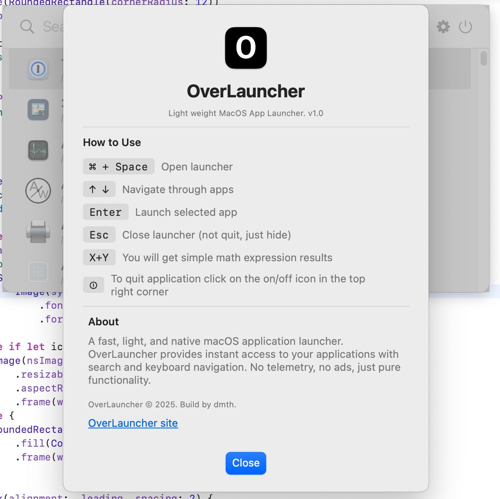
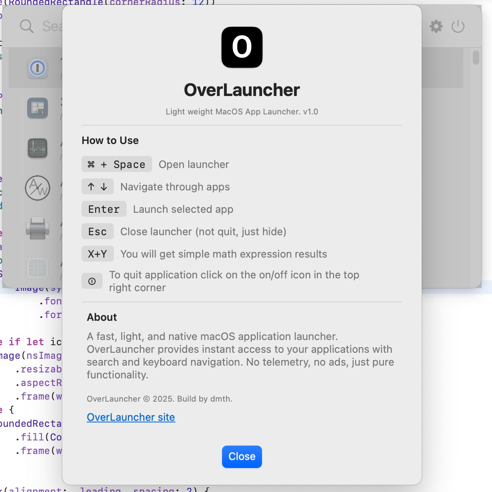

OverLauncher
A less bloated macOS launcher for developers
A less bloated macOS launcher for developers
OverLauncher is a lightweight, developer-friendly alternative to Spotlight. Built natively with Swift and SwiftUI, it offers fast application launching without the overhead of indexing and unnecessary features. Why disable Spotlight ?
Cmd+Space
 

Download the latest build from the releases page:
/Applications.
System Settings → Keyboard → Shortcuts → Spotlight and
uncheck the Cmd+Space combination.
Cmd+Space.
Source code will be shared later. If you find easter egg on this page I'll share it earlier with you ;-)
This program is provided AS IS, without any warranties or guarantees. Use it at your own risk — the authors are not responsible for any issues or damages that may arise from using this software.